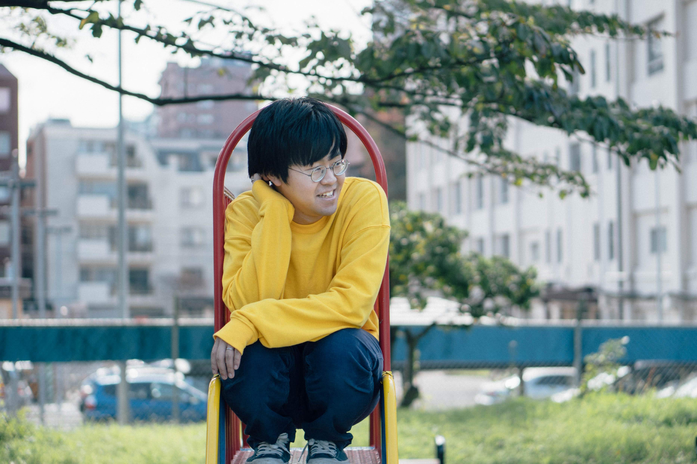
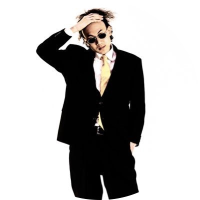

CONSEPT
クリエイターが知らされるのは共通の「theme（テーマ）」のみ。
それぞれがテーマを自由に捉え、思考し、作品を作り上げます。
小説、写真、イラスト、音楽、料理、ポエム...
業界の垣根を越えたクリエイターたちによる作品の数々。
それらを集約することで起きる化学反応を楽しむプロジェクト、
それがThe Meです。
ARTIST

のび太
小説、コラム、エッセイをはじめとした文筆業の他、
楽曲制作、webページ制作などを手掛ける。
茨城生まれ、茨城育ち。弱そうなヤツはだいたい友達。
好きなものはラーメンとコーラ、愛猫のいーちゃん（デブ）

岸本 学
グラフィックデザイナー、ペインターの他、
持ち前の話術を武器に司会（MC）業をもこなすしゃべりクリエイター。
かつて世界の危機を救った際、その代償として髪の毛を失った。